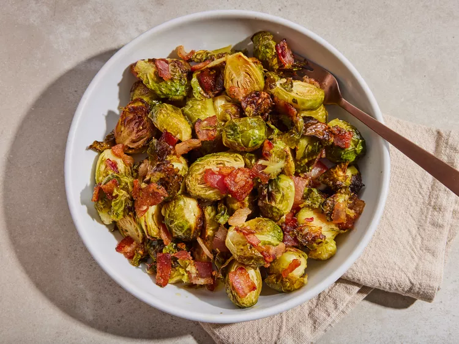

Back to Homepage
Recipe: Maple Roasted Brussel Sprouts

Image credit: Dotdash Meredith Food Studios
Great all year, these savory delights will keep you coming back for more servings.
Ingredients:
- Brussels Sprouts: 1 lb of whole, clean, and trimmed sprouts.
- Bacon: Your choice of variety.
- Seasonings: Salt and pepper.
- Oil: Olive oil.
- Maple syrup: Pure maple syrup, try to avoid imitation.
Instructions:
- Gather all of the ingredients and preheat your oven to 400F (200C). Set a baking sheet aside that has been lined with aluminum foil.
- Trim the brussels sprouts ends and slice larger ones in half. Move all of them to a large bowl.
- Add bacon, salt, and pepper. Add a light amount of olive oil and syrup before tossing until coverage is thorough.
- Transfer to a your baking sheet you prepped earlier, spread it all in an even layer.
- Roast in the oven until the bacon is satisfyingly crisp and the sprouts have reached a light caramelization.
- Serve and enjoy!
We hope you loved them. Always feel free to experiment with added seasonings of your choice!